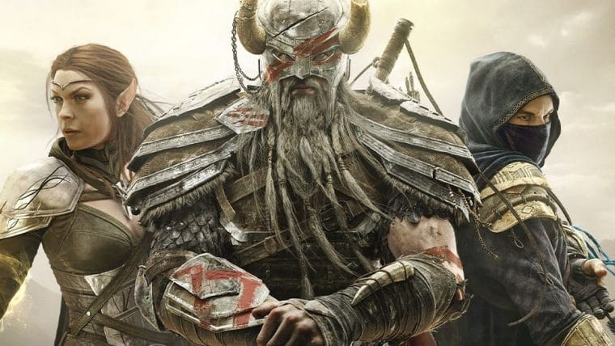
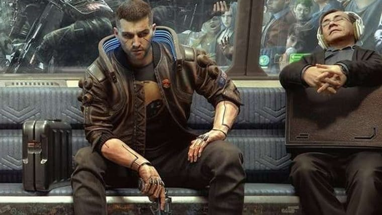
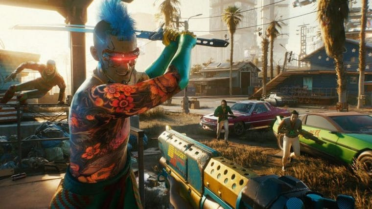
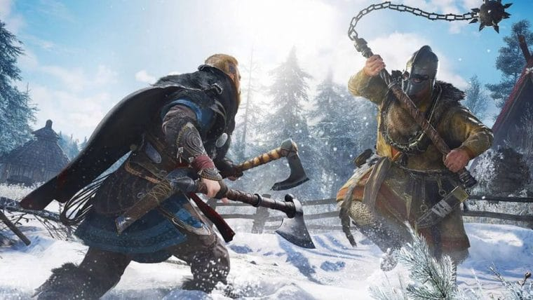

Matérias em destaque
Confiram as últimas notícias e fique ligado nas novidades
The Elder Scrolls Online está gratuito por tempo limitado

Saiba mais
Cyberpunk 2077 | Tudo o que foi mostrado no Night City Wire

Saiba mais
Cyberpunk 2077 | Assista às novidades do jogo no Night City Wire

Saiba mais
Assassin’s Creed Valhalla | Ubisoft divulga nova versão do trailer

Saiba mais